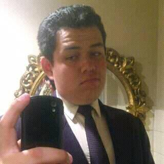

Curriculum de Alumno
Nombre: José Luis Sabiñon Osorio
Perfil
Futuro ingeniero en Sistemas Computacionales, con relevante formación académica en el area de la fisica-matematica.
Así como enfocarse en el desarrollo de proyectos enfocados al control, comunicación, computo, y programación
y legislación de software.
En busca de la Certificación CCNA en Cisco, así como contada experiencia como diseñador y administrador de
Bases de Datos
Información Personal
- Edad: 24 años
- Sexo: Masculino
- Dirección: Domicilio Conocido. Palo Hueco, Hidalgo S/N
- Numero Telefonico: 775 751 9756
- Correo Electronico: sabinos1996@gmail.com
- Fecha de Nacimiento: 3 de Febrero de 1996
- Entidad de Nacimiento: Ciudad de México
Formación Académica
- Escuela Primaria Miguel Hidalgo
- Escuela Secundaria Tecnica 113. General Juan Alvaréz
- Escuela Media Superior Cecyt 1 Gonzalo Vazquez Vela (por dos años)
- Escuela Media Superior COBAEH Tecocomulco
Idiomas
- Español (Lengua Materna)
- Inglés
- Conocimientos básicos de Frances
Habilidades Laborales
- Total Disposición a la resolución de problemas
- Poder dirigirme a los demás de manera fluida, acertiva, y respetuosa
- Fácil Adaptación al cambio
- Saber trabajar en equipo
- Entusiasmo por seguir aprendiendo
Intereses
- Desarrollo de mas y mejores capacidades en el ambito profesional
- Alcanzar una mejoría economica
- Explotar de manera exponencial mis capacidades laborales y profesionales
- Certificaciones por parte de CISCO y Huawei
- Conseguir un buen puesto en alguna empresa acorde al perfil con el que egresé de la UPT
